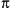

可用性
JavaScript
1.0; JScript 1.0; ECMAScript v1
语法
Math.constant
Math.function( )
常量
- Math.E
-
常量e，自然对数的底数。
- Math.LN10
-
10的自然对数。
- Math.LN2
-
2的自然对数。
- Math.LOG10E
-
以10为底的e的对数。
- Math.LOG2E
-
以2为底的e的对数。
- Math.PI
-
常量。
- Math.SQRT1_2
-
2的平方根除以1。
- Math.SQRT2
-
2的平方根。
静态函数
- Math.abs( )
-
计算绝对值。
- Math.acos( )
-
计算反余弦值。
- Math.asin( )
-
计算反正弦值。
- Math.atan( )
-
计算反正切值。
- Math.atan2( )
-
计算从X轴到一个点的角度。
- Math.ceil( )
-
对一个数上舍入。
- Math.cos( )
-
计算余弦值。
- Math.exp( )
-
计算e的指数。
- Math.floor( )
-
对一个数下舍人。
- Math.log( )
-
计算自然对数。
- Math.max( )
-
返回两个数中较大的一个。
- Math.min( )
-
返回两个数中较小的一个。
- Math.pow( )
-
计算xy。
- Math.random( )
-
计算一个随机数。
- Math.round( )
-
舍入为最接近的整数。
- Math.sin( )
-
计算正弦值。
- Math.sqrt( )
-
计算平方根。
- Math.tan( )
-
计算正切值。
描述
Math是一个对象，定义了引用有用的算术函数和常量的属性。Math对象对这些函数
和常量进行了分组，使用如下的语法就可以调用它们：
y = Math.sin(x);
area = radius * radius * Math.PI;
Math并不像Date和String那样是对象的类。没有Math()构造函数，像Math.sin()
这样的函数只是函数，不是对象的方法。
参阅
Number
|